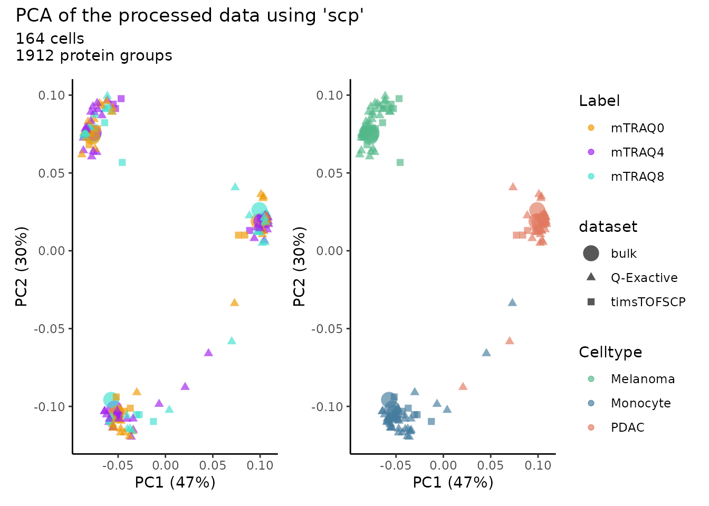

Replication of the plexDIA analysis (Derks et al. 2022)
Christophe Vanderaa1, Computational Biology, UCLouvain
Laurent Gatto, Computational Biology, UCLouvain
18 August 2022
derks2022.RmdIntroduction
plexDIA (Derks et al. 2022) enables the profiling of the proteome of single cells using a multiplexed DIA data acquisition strategy. The pipeline includes the nPOP sample processing protocole (Leduc et al. 2022), with mTRAQ labeling of the samples. The authors used the DIA-NN software (Demichev et al. 2022) to identify and quantify the MS data.
Let’s first load the replication package to make use of some helper functions. Those functions are only meant for this replication vignette and are not designed for general use.
library("SCP.replication")
scp and the plexDIA data analysis workflow
The code provided along with the article can be retrieved from this GitHub repository. The objective of this vignette is to replicate the analysis script while providing standardized, easy-to-read, and well documented code. Therefore, our first contribution is to formalize the data processing into a conceptual flow chart.
Overview of the processing workflow by Derks et al.
This replication vignette relies on a data framework dedicated to SCP data analysis that combines two Bioconductor classes (Vanderaa et al. 2021):
- The
SingleCellExperimentclass provides an interface to many cutting edge methods for single-cell analysis - The
QFeaturesclass facilitates manipulation and processing of MS-based quantitative data.
The scp vignette provides detailed information about the data structure. The scp package extends the functionality of QFeatures for single-cell application. scp offers a standardized implementation for single-cell processing methods.
The required packages for running this workflow are listed below.
## Core packages of this workflow
library("scp")
library("scpdata")
library("sva")
## Utility packages for data manipulation and visualization
library("tidyverse")
library("ggbeeswarm")
library("ggrepel")
library("reshape2")
library("patchwork")
library("ggpointdensity")
scpdata and the leduc2022 dataset
We also implemented a data package called scpdata. It distributes published SCP datasets, such as the derks2022 dataset. The datasets were downloaded from the data source provided in the publication and formatted to a QFeatures object so that it is compatible with our software. The underlying data storage is based on the ExperimentHub package that provides a cloud-based storage infrastructure.
The derks2022 dataset is provided at different levels of processing:
- The .raw and .d files that were generated by the mass-spectrometers. This data is not included in
scpdata. - The DIA-NN main output report table that contains the results of the spectrum identification and quantification.
- The DIA-NN MS1 extracted signal table, if a precursor was identified in at least one of the mTRAQ channels in the main report, signal (if any) will be extracted from the other channels regardless of whether there is sufficient evidence in those channels at 1% FDR.
- A processed protein data table is provided as the final output of the data processing. This workflow will try to replicate this table.
The workflow starts with precursor tables and will generate the processed protein data. The authors provided the DIA-NN output tables and the sample annotation table through a Google Drive repo. Protein data are shared a TXT files. We highly value the effort the authors have made to publicly share all the data generated in their project, from raw files to final expression tables (see the Slavov Lab website).
To include in scpdata
Actually, derks2022() is still in development and is not yet available from scpdata. The code below will soon be published in scpdata. We here include it so that we can still run the vignette.
datadir <- "~/PhD/.localdata/SCP/derks2022/"
## Sample annotations
sampleAnnot <- read.delim(paste0(datadir, "Meta_SingleCell_updated_1.tsv"))
## Add which dataset each sample is part of
sampleAnnot$dataset <- sampleAnnot$Instrument
sampleAnnot$dataset[!sampleAnnot$Real_single_cell &
sampleAnnot$Instrument == "Q-Exactive"] <- "bulk"
## Adapt variable to better match the DIANN output data
sampleAnnot$Label <- as.character(sampleAnnot$Label)
timsPath <- make.names("F:\\JD\\plexDIA\\Bruker\\OneDrive_1_3-9-2022\\")
qePath <- make.names("F:\\JD\\plexDIA\\nPOP\\")
sampleAnnot$File.Name <- ifelse(sampleAnnot$Instrument == "timsTOFSCP",
paste0(timsPath, sampleAnnot$Raw, ".d"),
paste0(qePath, sampleAnnot$Raw, ".raw"))
## Bulk data
# We load the DIA-NN main output table and the MS1 extracted report table.
# These are read and combined in a `QFeatures`object.
extractedDataBulk <- read.delim(paste0(datadir, "qe_bulk/Report.pr_matrix_channels_ms1_extracted.tsv"))
reportDataBulk <- read.delim(paste0(datadir, "qe_bulk/Report.tsv"))
bulk <- readSCPfromDIANN(colData = sampleAnnot,
reportData = reportDataBulk,
extractedData = extractedDataBulk,
multiplexing = "mTRAQ")
## Rename the MS1Extracted assay
names(bulk)[length(bulk)] <- "bulk_prec_extracted"
## Load timsTOF-SCP data
# We load the DIA-NN main output table and the MS1 extracted report table.
# These are read and combined in a `QFeatures`object.
extractedDataTims <- read.delim(paste0(datadir, "tims_sc/Report.pr_matrix_channels_ms1_extracted.tsv"))
reportDataTims <- read.delim(paste0(datadir, "tims_sc/Report.tsv"))
# We modify the `Run` variable to match the `Run` variables in the other tables
reportDataTims$Run <- make.names(reportDataTims$Run)
tims <- readSCPfromDIANN(colData = sampleAnnot,
reportData = reportDataTims,
extractedData = extractedDataTims,
multiplexing = "mTRAQ")
names(tims)[length(tims)] <- "tims_prec_extracted"
## Load Q-Exactive data
# We load the DIA-NN main output table and the MS1 extracted report table.
# These are read and combined in a `QFeatures`object.
extractedDataQE <- read.delim(paste0(datadir, "qe_sc/Report.pr_matrix_channels_ms1_extracted.tsv"))
reportDataQE <- read.delim(paste0(datadir, "qe_sc/Report.tsv"))
qe <- readSCPfromDIANN(colData = sampleAnnot,
reportData = reportDataQE,
extractedData = extractedDataQE,
multiplexing = "mTRAQ")
## Warning in (function (featureData, colData, batchCol, channelCol,
## suffix = NULL, : Missing metadata. The features are removed for
## F..JD.plexDIA.nPOP.wJD1200.raw, F..JD.plexDIA.nPOP.wJD1205.raw,
## F..JD.plexDIA.nPOP.wJD1203.raw, F..JD.plexDIA.nPOP.wJD1201.raw,
## F..JD.plexDIA.nPOP.wJD1204.raw, F..JD.plexDIA.nPOP.wJD1202.raw
names(qe)[length(qe)] <- "qe_prec_extracted"
## Load protein data
prots <- read.delim(paste0(datadir, "Proteins_SC_IDs.txt"))
prots <- readSingleCellExperiment(prots, fname = "prot",
ecol = grep("id", colnames(prots)))
colData(prots) <- DataFrame(sampleAnnot[sampleAnnot$id %in% colnames(prots), ])
colnames(prots) <- paste0(prots$File.Name, ".", prots$Label)
## Combine all datasets
## TODO implement a c() method to simplify this process...
derks2022 <- QFeatures(experiments = c(experiments(bulk), experiments(tims),
experiments(qe)),
colData = rbind(colData(bulk), colData(tims), colData(qe)),
assayLinks = Reduce(append, list(bulk@assayLinks, tims@assayLinks,
qe@assayLinks)))
derks2022 <- addAssay(derks2022, prots, name = "proteins", dropColData = TRUE)
derks2022 <- addAssayLink(derks2022,
from = grep("extracted$", names(derks2022)),
to = "proteins",
varFrom = rep("Protein.Group", 3),
varTo = "prot")
## Save data
## ...Stop “To include in scpdata”
We formatted the derks2022 dataset following our data framework. The formatted data can be retrieved from the scpdata package using the derks2022() function. All datasets in scpdata are called after the first author and the date of publication.
The derks2022 data combines 3 main datasets: the 100-cell equivalent samples acquired with a Q-Exactive instrument, the single-cell samples acquired with a Q-Exactive instrument (we call this dataset qe), and the the single-cell samples acquired with a timsTOF-SCP instrument (we call this dataset tims). Each dataset contains the DIA-NN main report data split over each run and the combined MS1 extracted data (see above for more details). The data also contains the protein data for all samples as processed by the authors.
# (scp <- derks2022())
(derks <- derks2022)
## An instance of class QFeatures containing 66 assays:
## [1] F..JD.plexDIA.nPOP.wJD1194.raw: SingleCellExperiment with 19618 rows and 3 columns
## [2] F..JD.plexDIA.nPOP.wJD1195.raw: SingleCellExperiment with 19587 rows and 3 columns
## [3] F..JD.plexDIA.nPOP.wJD1196.raw: SingleCellExperiment with 19176 rows and 3 columns
## ...
## [64] F..JD.plexDIA.nPOP.wJD1193.raw: SingleCellExperiment with 2643 rows and 3 columns
## [65] qe_prec_extracted: SingleCellExperiment with 8590 rows and 144 columns
## [66] proteins: SingleCellExperiment with 1475 rows and 164 columnsThe datasets are stored in a QFeatures object. In total, it contains 66 different SingleCellExperiment objects that we refer to as assays. Each assay contains expression data along with feature metadata. Each row in an assay represents a feature, in this case a precursor or a protein depending on the assay. Each column in an assay represents a sample. During sample preparation, 3 samples are pooled using mTRAQ labeling, hence some assays contain 3 columns corresponding to each measured channel.
Using plot(), we can have a quick overview of the assays.
plot(derks)
## Warning in plot.QFeatures(derks): The QFeatures object contains many assays. You
## may want to consider creating an interactive plot (set 'interactive = TRUE')
This figure is crowded, you can use plot(derks, interactive = TRUE) to interactively explore this map. However, we can see that the different runs in the top of the figure converge to 3 assays that contain the extracted MS1 precursor signal for the three datasets: bulk, tims and qe. Finally, the protein table contains data derived from all three datasets.
The objective of this vignette is to replicate the combined protein data table from the precursor assays following the same data processing workflow as the original study by Derks et al. but using standardized functionality.
We extract the proteins assay and keep it for later benchmarking. getWithColData() extract an assay of interest along with the associated sample annotations. We then remove the assay from the S object for the remainder of the processing. We apply this using removeAssays.
proteins_derks <- getWithColData(derks, "proteins")
## Warning: 'experiments' dropped; see 'metadata'
derks <- removeAssay(derks, "proteins")
## Warning: 'experiments' dropped; see 'metadata'Remove unwanted samples
Before starting the data processing, we remove the samples that are not considered by the authors to generate the protein data. The timsTOF-SCP dataset was acquired with a few bulk samples diluted to single-cell equivalent. These samples are ending with "_t_DB". The Q-Exactive dataset contains single-cells, but also a dozen negative controls (encoded as "Neg").
table(derks$Celltype, derks$dataset)
##
## bulk Q-Exactive timsTOFSCP
## Melanoma 0 45 0
## Melanoma_DB 3 0 0
## Melanoma_t 0 0 10
## Melanoma_t_DB 0 0 1
## Neg 0 12 0
## PDAC 0 45 0
## PDAC_DB 3 0 0
## PDAC_t 0 0 10
## PDAC_t_DB 0 0 1
## U-937 0 42 0
## U-937_DB 3 0 0
## U-937_t 0 0 10
## U-937_t_DB 0 0 1We remove those unwanted samples by accessing the information from the colData using subsetByColData().
derks <- subsetByColData(derks, !grepl("Neg|_t_DB", derks$Celltype))Isotopic carry over correction
The first data processing step is to correct for isotopic carry over from one mTRAQ channel to another. This is performed using correctIsotopicCarryover(). The function takes an assay and returns the same assay with corrected quantifications. Since there are 3 datasets, we will loop over the 3 assays containing the extracted MS1 signal. These corrected assays are added to the QFeatures object using addAssay() and the links between the precursors are added using
for (i in c("bulk", "qe", "tims")) {
inputAssay <- paste0(i ,"_prec_extracted")
outputAssay <- paste0(i ,"_prec_corrected")
x <- correctIsotopicCarryover(derks[[inputAssay]])
derks <- addAssay(derks, x, name = outputAssay)
derks <- addAssayLinkOneToOne(derks, from = inputAssay,
to = outputAssay)
cat("Finished correction for the", i, "dataset\n")
}
## Finished correction for the bulk dataset
## Finished correction for the qe dataset
## Finished correction for the tims datasetPrecursor FDR control
!discussion this is too complicated. Refactoring of filterFeatures in QFeatures would make this much easier.
!discussion There was a copy-paste issue in the original code: they used the scQE dataset instead of the bulkQE dataset…
PGs_0.01FDR <- SC[which(SC$Lib.PG.Q.Value<0.01),] %>% distinct(Protein.Group)
Should have been
PGs_0.01FDR <- B[which(B$Lib.PG.Q.Value<0.01),] %>% distinct(Protein.Group)
for (i in c("bulk", "qe", "tims")) {
repAssays <- assayLink(derks, paste0(i ,"_prec_extracted"))@from
rd <- rbindRowData(derks, repAssays)
PGs_0.01FDR <- unique(rd$Protein.Group[rd$Lib.PG.Q.Value < 0.01])
x <- derks[[paste0(i ,"_prec_corrected")]]
ind <- rowData(x)$Protein.Group %in% PGs_0.01FDR
derks[[paste0(i ,"_prec_corrected")]] <- x[ind, ]
if (!all(ind))
derks <- addAssayLink(derks, from = paste0(i ,"_prec_extracted"),
to = paste0(i ,"_prec_corrected"),
varFrom = "Precursor.Id",
varTo = "Precursor.Id")
cat("Finished FDR control for the", i, "dataset\n")
}
## Finished FDR control for the bulk dataset
## Warning in replaceAssay(x = x, y = value, i = i): Links between assays were
## lost/removed during replacement. See '?addAssayLink' to restore them manually.
## Finished FDR control for the qe dataset
## Finished FDR control for the tims datasetCombine the datasets
Up to now, we kept the data belonging to each MS run in separate assays. We now combine all batches into a single assay. This can easily be done using the joinAssays() function from the QFeatures package.
Consensus mapping of precursors to proteins
We need to account for an issue in the data. joinAssays() will only keep the metadata variables that have the same value between matching rows. However, some precursors map to one protein group in one run and to another protein group in another run. Hence, the protein group is not constant for all precursors and is removed during joining. It is important we keep the protein group information in the rowData since we will later need it to aggregate precursors to proteins. To avoid this issue, we replace the problematic precursor to protein group mappings through a majority vote.
## Generate a list of DataFrames with the information to modify
precAssays <- grep("corrected$", names(derks), value = TRUE)
ppMap <- rbindRowData(derks, i = precAssays) %>%
data.frame %>%
group_by(Precursor.Id) %>%
## The majority vote happens here
mutate(Protein.Group =
names(sort(table(Protein.Group),
decreasing = TRUE))[1]) %>%
select(Precursor.Id, Protein.Group) %>%
filter(!duplicated(Precursor.Id, Protein.Group))
consensus <- lapply(precAssays, function(i) {
ind <- match(rowData(derks[[i]])$Precursor.Id,
ppMap$Precursor.Id)
DataFrame(Protein.Group = ppMap$Protein.Group[ind])
})
## Name the list
names(consensus) <- precAssays
## Modify the rowData
rowData(derks) <- consensusWe now join the three datasets in a single assay. This is performed using joinAssays().
(derks <- joinAssays(derks, i = grep("corrected$", names(derks)),
name = "prec_corrected"))
## An instance of class QFeatures containing 69 assays:
## [1] F..JD.plexDIA.nPOP.wJD1194.raw: SingleCellExperiment with 19618 rows and 3 columns
## [2] F..JD.plexDIA.nPOP.wJD1195.raw: SingleCellExperiment with 19587 rows and 3 columns
## [3] F..JD.plexDIA.nPOP.wJD1196.raw: SingleCellExperiment with 19176 rows and 3 columns
## ...
## [67] qe_prec_corrected: SingleCellExperiment with 8416 rows and 132 columns
## [68] tims_prec_corrected: SingleCellExperiment with 8722 rows and 30 columns
## [69] prec_corrected: SingleCellExperiment with 23585 rows and 171 columnsThe last assay, prec_corrected contains the data for all 3 datasets.
Filter missing data
Next, the authors require less than 60% missing data per cell. We compute the percent missing data for each column. We store it in the colData using derks$ <- for later use.
derks$pNA <- colMeans(assay(derks[["prec_corrected"]]) == 0, na.rm = TRUE)!discussion: I do not agree with how the missing data is computed. Missing data is defined by the authors as the the number of zero values and ignore the presence of NA’s in the data… I don’t understand why ignoring the NA’s, it dramatically underestimates the missingness. Instead, I would have done as depicted in the chunk below although it considers the union of all proteins found in all 3 datasets and will .
We plot the percent missingness for each data set.
data.frame(colData(derks)) %>%
ggplot() +
aes(y = pNA,
x = dataset,
color = Celltype) %>%
geom_beeswarm() +
scale_size_manual(values = c(3, 0.8))
Most samples comply to the threshold. We remove the few single-cells with too many missing data using subsetByColdata() since we have stored pNA in the colData.
derks <- subsetByColData(derks, derks$pNA < 0.6)Clean missing data
Log-transformation has generated infinite values because zeros were present in the data. We clean these infinite values and residual zero by replacing them with NA’s using infIsNA() and zeroIsNA(), respectively.
Batch correction
The authors then apply a first batch correction by aligning the precursor means across the different acquisition runs. First, we extract the combined precursor assay along with the colData using getWithColData() and extract the quantification matrix from it using assay()
sce <- getWithColData(derks, "prec_corrected")
## Warning: 'experiments' dropped; see 'metadata'
m <- assay(sce)For each acquisition run, we divided each row by its mean.
for (batch in sce$File.Name) {
ind <- which(sce$File.Name == batch)
m[, ind] <- sweep(m[, ind, drop = FALSE], FUN = "/", MARGIN = 1,
STATS = rowMeans(m[, ind, drop = FALSE], na.rm = TRUE))
}
assay(sce) <- mWe add the batch corrected values as a new assay using addAssay() and keep the links with the previous assay using addAssayLinkOneToOne().
derks <- addAssay(derks, sce, name = "prec_runnorm", dropColData = TRUE)
derks <- addAssayLinkOneToOne(derks, from = "prec_corrected", to = "prec_runnorm")!discussion: this type of batch correction is rather common and should be implemented in scp or maybe even in QFeatures.
Normalization
The next step is to apply normalization. The authors perform it at the sample level and the precursor level.
Median normalize per sample
Median normalization per sample is available among the methods from normalizeSCP(). It will automatically add a new assay that we call prec_sampnorm
derks <- normalizeSCP(derks, "prec_runnorm", name = "prec_sampnorm",
method = "div.median")Mean normalize per precursor
Mean normalization per sample is not available among the methods from normalizeSCP(), but can be applied using sweep() offering more flexibility.
Protein aggregation
Up to now, the data was processed at the precursor level. Several precursors belong to the same protein. One protein group is represented by over 150 precursors.
hist(table(rowData(derks[["prec_featnorm"]])$Protein.Group),
xlab = "Number precursors per protein group", main = "")
We aggregate all precursors belonging to the same proteins. Median aggregation is performed using aggregateFeatures() and providing fun = colMedians.
derks <- aggregateFeatures(derks, i = "prec_featnorm", name = "prot",
fcol = "Protein.Group", fun = colMedians,
na.rm = TRUE)Batch correction
After protein agregation, the authors perform again a batch correction round. We use the same approach as above.
sce <- getWithColData(derks, "prot")
## Warning: 'experiments' dropped; see 'metadata'
m <- assay(sce)
for (batch in sce$File.Name) {
ind <- which(sce$File.Name == batch)
m[, ind] <- sweep(m[, ind, drop = FALSE], FUN = "/", MARGIN = 1,
STATS = rowMeans(m[, ind, drop = FALSE], na.rm = TRUE))
}
assay(sce) <- m
derks <- addAssay(derks, sce, name = "prot_runnorm", dropColData = TRUE)
derks <- addAssayLinkOneToOne(derks, from = "prot", to = "prot_runnorm")Normalization
Again, the batch correction is followed by sample and protein normalization. We use the same approach as above.
derks <- normalizeSCP(derks, "prot_runnorm", name = "prot_sampnorm",
method = "div.median")
rowm <- rowMeans(assay(derks[["prot_sampnorm"]]), na.rm = TRUE)
derks <- sweep(derks, i = "prot_sampnorm", name = "prot_featnorm",
MARGIN = 1, FUN = "/", STATS = rowm)Log-transform
The protein data is log2-transformed using logTransform().
derks <- logTransform(derks, i = "prot_featnorm", name = "prot_log",
base = 2)Clean missing data
Log-transformation has generated infinite values because zeros were present in the data. We clean these infinite values and residual zero by replacing them with NA’s using infIsNA() and zeroIsNA(), respectively.
Filter missing data
Although we already performed a first filtering based on data missingness, we further filter on protein and sample missingness.
Filter on protein missingness
We filter out proteins with more than 95% missingness. This is performed using filterNA() that removes rows (proteins) with a missingness higher than the given threshold.
derks <- filterNA(derks, i = "prot_log", pNA = 0.95)Filter on single-cell missingness
We then filter out samples with more than 95% missingness. This is performed using the same procedure as above.
derks$pNA <- colMeans(is.na(assay(derks[["prot_log"]])))
derks <- subsetByColData(derks, derks$pNA < 0.95)!discussion: it would be nice to have a byRow = TRUE argument in filterNA to filter based on row or columns.
Imputation
Although we filtered on missing data, the protein data is majorly composed of missing values. The graph below shows the distribution of the proportion missingness in cells. Cells contain on average 65 % missing values.
data.frame(colData(derks)) %>%
ggplot() +
aes(y = pNA,
x = dataset,
color = Celltype) %>%
geom_beeswarm()
The datasets containing single-cells have more than 50% missing data that is imputed by the authors using a custom hierarchical clustering function. This function is available from SCP.replication as imputeKnnSCoPE2().
derks <- imputeKnnSCoPE2(derks, i = "prot_log", name = "prot_imp", k = 3)Batch correction
A final batch correction is applied, this time using the ComBat algorithm from the sva package.
sce <- getWithColData(derks, "prot_imp")
## Warning: 'experiments' dropped; see 'metadata'
batch <- sce$Label
mod <- model.matrix(~ Celltype, data = colData(sce))
assay(sce) <- ComBat(assay(sce), batch = batch, mod = mod)
derks <- addAssay(derks, sce, name = "prot_bc", dropColData = TRUE)
derks <- addAssayLinkOneToOne(derks, from = "prot_imp", to = "prot_bc")Normalization
Again, the batch correction is followed by sample and protein normalization. We use the same approach as above.
derks <- normalizeSCP(derks, "prot_bc", name = "prot_bc_sampnorm",
method = "center.median")
rowm <- rowMeans(assay(derks[["prot_bc_sampnorm"]]), na.rm = TRUE)
derks <- sweep(derks, i = "prot_bc_sampnorm", name = "prot_bc_featnorm",
MARGIN = 1, FUN = "-", STATS = rowm)This last normalization step leads to the final data as processed by Derks et al. We will now compare our results with the results published by the authors.
Benchmark final data
Let’s first compare the filtered cells.
allElements <- union(colnames(proteins_derks),
colnames(derks[["prot_bc_featnorm"]]))
table(derks2022 = allElements %in% colnames(proteins_derks),
scp = allElements %in% colnames(derks[["prot_bc_featnorm"]]))
## scp
## derks2022 FALSE TRUE
## FALSE 0 7
## TRUE 7 157There is a good agreement between the set of filtered cells after the data processing by the authors and the data processing in this vignette.
Let’s now compare the filtered protein groups.
allElements <- union(rownames(proteins_derks),
rownames(derks[["prot_bc_featnorm"]]))
table(derks2022 = allElements %in% rownames(proteins_derks),
scp = allElements %in% rownames(derks[["prot_bc_featnorm"]]))
## scp
## derks2022 FALSE TRUE
## FALSE 0 561
## TRUE 124 1351Most protein groups are found in both data processing workflows, but the agreement is weak.
Let’s now compare the quantitative data between the two matrices. To do so, we need to intersect the column names and the rownames.
rows <- intersect(rownames(proteins_derks),
rownames(derks[["prot_bc_featnorm"]]))
cols <- intersect(colnames(proteins_derks),
colnames(derks[["prot_bc_featnorm"]]))
err <- assay(proteins_derks)[rows, cols] -
assay(derks[["prot_bc_featnorm"]])[rows, cols]
data.frame(difference = as.vector(err[!is.na(err)])) %>%
ggplot() +
aes(x = difference) +
geom_histogram(bins = 50) +
xlab("plexDIA - scp") +
scale_y_continuous(labels = scales::scientific) +
theme_minimal()
There are very large differences between the two workflows. Note that the differences are computed on a log2 scale. However, the mode of the distribution peaks around 0.
Bulk vs single-cell
sce <- getWithColData(derks, "prot_imp")
## Warning: 'experiments' dropped; see 'metadata'
m <- assay(sce)
logFC <- data.frame(PvsU_tims = rowMeans(m[, sce$Celltype == "PDAC_t"], na.rm = TRUE) -
rowMeans(m[, sce$Celltype == "U-937_t"], na.rm = TRUE),
PvsU_qe = rowMeans(m[, sce$Celltype == "PDAC"], na.rm = TRUE) -
rowMeans(m[, sce$Celltype == "U-937"], na.rm = TRUE),
PvsU_bulk = rowMeans(m[, sce$Celltype == "PDAC_DB"], na.rm = TRUE) -
rowMeans(m[, sce$Celltype == "U-937_DB"], na.rm = TRUE),
Protein.Group = rownames(m))
logFC <- left_join(logFC, data.frame(Protein.Group = c("P17096;P17096-3", "P07437", "P08729"),
Protein.Name = c("HMGA1", "TUBB", "KRT7")),
by = c("Protein.Group"))
ggplot(logFC) +
aes(x = PvsU_bulk,
y = PvsU_qe) +
ggtitle("Q-Exactive vs Bulk",
subtitle = paste0("rho = ", round(cor(logFC$PvsU_qe,
logFC$PvsU_bulk,
use = "pairwise.complete.obs",
method = "spearman"), 2))) +
labs(x = expression(paste(Log["2"],", PDAC/U-937 100 cells")),
y = expression(paste(Log["2"],", PDAC/U-937 1 cell (Q-Exactive)"))) +
ggplot(logFC) +
aes(x = PvsU_bulk,
y = PvsU_tims) +
ggtitle("timsTOF-SCP vs Bulk",
subtitle = paste0("rho = ", round(cor(logFC$PvsU_tims,
logFC$PvsU_bulk,
use = "pairwise.complete.obs",
method = "spearman"), 2))) +
labs(x = expression(paste(Log["2"],", PDAC/U-937 100 cells")),
y = expression(paste(Log["2"],", PDAC/U-937 1 cell (timTOF-SCP)"))) +
plot_layout() &
geom_pointdensity() &
scale_color_continuous(type = "viridis") &
theme_classic() &
theme(legend.position = "none") &
geom_label_repel(aes(label = Protein.Name),
min.segment.length = unit(0, 'lines'),
box.padding = 2,
size = 2.75)
## Warning: Removed 1909 rows containing missing values (geom_label_repel).
## Removed 1909 rows containing missing values (geom_label_repel).
PCA
We here plot the PCA to reproduce Figure 6p from the author’s paper. Although the we could not accurately reproduce the data provided by the authors, we can clearly see the same global pattern as in the original work.
m <- assay(derks[["prot_bc_featnorm"]])
pcaRes <- pcaSCoPE2(m)
## Percent of variance explained by each principle component
pca_var <- pcaRes$values
percent_var<- pca_var/sum(pca_var)*100
## PCA scores data
pcaDf <- data.frame(PC = pcaRes$vectors[, 1:2],
colData(derks))
pcaDf$Type <- pcaDf$Celltype
pcaDf$Type[grepl("DB", pcaDf$Celltype)] <- "Bulk"
pcaDf$Type[grepl("t$", pcaDf$Celltype)] <- "timsTOF-SCP"
pcaDf$Type[!grepl("[_]", pcaDf$Celltype)] <- "Q-Exactive"
pcaDf$Celltype[grepl("PDAC", pcaDf$Celltype)] <- "PDAC"
pcaDf$Celltype[grepl("Mel", pcaDf$Celltype)] <- "Melanoma"
pcaDf$Celltype[grepl("^U", pcaDf$Celltype)] <- "Monocyte"
pcaDf$Label <- paste0("mTRAQ", pcaDf$Label)
## Plot
ggplot(pcaDf) +
aes(color = Label) +
scale_color_manual(values = c("orange2","purple","turquoise")) +
ggplot(pcaDf) +
aes(color = Celltype) +
scale_color_manual(values = c("#52B788","#457B9D","#E07A5F")) +
plot_annotation(title = "PCA of the processed data using 'scp'",
subtitle = paste0(sum(pcaDf$Type != "Bulk"), " cells\n",
nrow(m), " protein groups")) +
plot_layout(guides = "collect") &
aes(x = PC.1,
y = PC.2,
size = Type,
shape = Type,
alpha = Type) &
geom_point(alpha = 0.66) &
labs(x = paste0("PC1 (", round(percent_var[1],0),"%)"),
y = paste0("PC2 (", round(percent_var[2],0),"%)")) &
scale_size_manual(values = c(5, 2, 2)) &
theme_classic()
Requirements
Hardware and software
The system details of the machine that built the vignette are:
## Machine: Linux (5.15.0-46-generic)
## R version: R.4.2.0 (svn: 81131)
## RAM: 16.5 GB
## CPU: 16 core(s) - 11th Gen Intel(R) Core(TM) i7-11800H @ 2.30GHzSession info
sessionInfo()
## R Under development (unstable) (2021-11-02 r81131)
## Platform: x86_64-pc-linux-gnu (64-bit)
## Running under: Ubuntu 20.04.3 LTS
##
## Matrix products: default
## BLAS: /usr/lib/x86_64-linux-gnu/openblas-pthread/libblas.so.3
## LAPACK: /usr/lib/x86_64-linux-gnu/openblas-pthread/liblapack.so.3
##
## locale:
## [1] LC_CTYPE=en_US.UTF-8 LC_NUMERIC=C
## [3] LC_TIME=en_GB.UTF-8 LC_COLLATE=en_US.UTF-8
## [5] LC_MONETARY=en_GB.UTF-8 LC_MESSAGES=en_US.UTF-8
## [7] LC_PAPER=en_GB.UTF-8 LC_NAME=C
## [9] LC_ADDRESS=C LC_TELEPHONE=C
## [11] LC_MEASUREMENT=en_GB.UTF-8 LC_IDENTIFICATION=C
##
## attached base packages:
## [1] stats4 stats graphics grDevices utils datasets methods
## [8] base
##
## other attached packages:
## [1] benchmarkme_1.0.8 ggpointdensity_0.1.0
## [3] patchwork_1.1.1 reshape2_1.4.4
## [5] ggrepel_0.9.1 ggbeeswarm_0.6.0
## [7] forcats_0.5.1 stringr_1.4.0
## [9] dplyr_1.0.9 purrr_0.3.4
## [11] readr_2.1.2 tidyr_1.2.0
## [13] tibble_3.1.8 ggplot2_3.3.6
## [15] tidyverse_1.3.2 sva_3.45.0
## [17] BiocParallel_1.31.12 genefilter_1.79.0
## [19] mgcv_1.8-40 nlme_3.1-158
## [21] SCP.replication_0.2.1 scpdata_1.5.0
## [23] ExperimentHub_2.5.0 AnnotationHub_3.5.0
## [25] BiocFileCache_2.5.0 dbplyr_2.2.1
## [27] scp_1.7.1 QFeatures_1.7.1
## [29] MultiAssayExperiment_1.23.5 SingleCellExperiment_1.19.0
## [31] SummarizedExperiment_1.27.1 Biobase_2.57.1
## [33] GenomicRanges_1.49.0 GenomeInfoDb_1.33.3
## [35] IRanges_2.31.0 S4Vectors_0.35.1
## [37] BiocGenerics_0.43.1 MatrixGenerics_1.9.1
## [39] matrixStats_0.62.0 BiocStyle_2.25.0
##
## loaded via a namespace (and not attached):
## [1] readxl_1.4.0 backports_1.4.1
## [3] systemfonts_1.0.4 plyr_1.8.7
## [5] igraph_1.3.4 lazyeval_0.2.2
## [7] splines_4.2.0 digest_0.6.29
## [9] foreach_1.5.2 htmltools_0.5.3
## [11] fansi_1.0.3 magrittr_2.0.3
## [13] memoise_2.0.1 doParallel_1.0.17
## [15] googlesheets4_1.0.0 cluster_2.1.3
## [17] tzdb_0.3.0 limma_3.53.5
## [19] Biostrings_2.65.1 annotate_1.75.0
## [21] modelr_0.1.8 pkgdown_2.0.6
## [23] colorspace_2.0-3 rvest_1.0.2
## [25] blob_1.2.3 rappdirs_0.3.3
## [27] textshaping_0.3.6 haven_2.5.0
## [29] xfun_0.31 crayon_1.5.1
## [31] RCurl_1.98-1.8 jsonlite_1.8.0
## [33] iterators_1.0.14 survival_3.3-1
## [35] glue_1.6.2 gtable_0.3.0
## [37] gargle_1.2.0 zlibbioc_1.43.0
## [39] XVector_0.37.0 OrgMassSpecR_0.5-3
## [41] DelayedArray_0.23.1 scales_1.2.0
## [43] DBI_1.1.3 edgeR_3.39.4
## [45] Rcpp_1.0.9 viridisLite_0.4.0
## [47] xtable_1.8-4 clue_0.3-61
## [49] reticulate_1.25 bit_4.0.4
## [51] MsCoreUtils_1.9.1 httr_1.4.3
## [53] ellipsis_0.3.2 farver_2.1.1
## [55] pkgconfig_2.0.3 XML_3.99-0.10
## [57] sass_0.4.2 locfit_1.5-9.6
## [59] utf8_1.2.2 labeling_0.4.2
## [61] tidyselect_1.1.2 rlang_1.0.4
## [63] later_1.3.0 AnnotationDbi_1.59.1
## [65] munsell_0.5.0 BiocVersion_3.16.0
## [67] cellranger_1.1.0 tools_4.2.0
## [69] cachem_1.0.6 cli_3.3.0
## [71] generics_0.1.3 RSQLite_2.2.15
## [73] broom_1.0.0 evaluate_0.15
## [75] fastmap_1.1.0 yaml_2.3.5
## [77] ragg_1.2.2 knitr_1.39
## [79] bit64_4.0.5 fs_1.5.2
## [81] KEGGREST_1.37.3 AnnotationFilter_1.21.0
## [83] mime_0.12 xml2_1.3.3
## [85] compiler_4.2.0 rstudioapi_0.13
## [87] beeswarm_0.4.0 filelock_1.0.2
## [89] curl_4.3.2 png_0.1-7
## [91] interactiveDisplayBase_1.35.0 reprex_2.0.1
## [93] bslib_0.4.0 stringi_1.7.8
## [95] highr_0.9 desc_1.4.1
## [97] lattice_0.20-45 ProtGenerics_1.29.0
## [99] Matrix_1.4-1 vctrs_0.4.1
## [101] pillar_1.8.0 lifecycle_1.0.1
## [103] BiocManager_1.30.18 jquerylib_0.1.4
## [105] bitops_1.0-7 httpuv_1.6.5
## [107] R6_2.5.1 bookdown_0.27
## [109] promises_1.2.0.1 vipor_0.4.5
## [111] codetools_0.2-18 benchmarkmeData_1.0.4
## [113] MASS_7.3-58.1 assertthat_0.2.1
## [115] rprojroot_2.0.3 withr_2.5.0
## [117] GenomeInfoDbData_1.2.8 parallel_4.2.0
## [119] hms_1.1.1 grid_4.2.0
## [121] rmarkdown_2.14 googledrive_2.0.0
## [123] lubridate_1.8.0 shiny_1.7.2